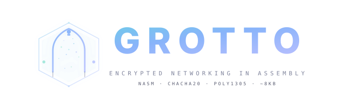

ChaCha20-Poly1305 authenticated encryption networking tool in pure x86_64 NASM assembly. Cross-platform. Zero dependencies. Full AEAD. ~8 KB.
Every byte handcrafted in NASM. No compiler, no runtime, no import table. ChaCha20-Poly1305 AEAD with bidirectional encrypted relay — Linux and Windows from the same codebase.
Full RFC 8439 AEAD in pure assembly. 256-bit PSK, fresh random nonce per message, Poly1305 MAC verification rejects tampered payloads.
Dual-target build: Linux (~13 KB static ELF) and Windows (~8 KB minimal PE). Shared crypto core, platform-specific networking. Same wire protocol, full interop.
All Windows APIs resolved at runtime via PEB walking and ror13 hash matching. No import table, no strings. Linux uses raw syscalls with no libc.
The -e flag spawns an interactive shell (cmd.exe or /bin/sh) with stdin/stdout piped through the encrypted channel. Full bidirectional AEAD relay.
Zero DLL imports on Windows. No libc on Linux. Every API resolved dynamically from the PEB or via raw syscalls. Nothing to link against.
Compile host, port, key, and exec command directly into the binary. Zero arguments at runtime — nothing visible in the process list.
~3,800 lines of handwritten x86_64 assembly. Every component implemented from scratch — no libraries, no dependencies, no shortcuts.
Every message is independently encrypted with a fresh 96-bit nonce. The Poly1305 MAC authenticates the ciphertext per RFC 8439 — any tampered byte is silently rejected.
Shared crypto core with platform-specific networking, I/O, and shell execution. Linux and Windows binaries interoperate seamlessly over the same encrypted wire protocol.
Generate a 256-bit pre-shared key. Build both targets. Connect with the same key on both ends — every message encrypted with ChaCha20-Poly1305 AEAD.
Compile configuration directly into the binary — no CLI arguments needed, nothing visible in the process list.